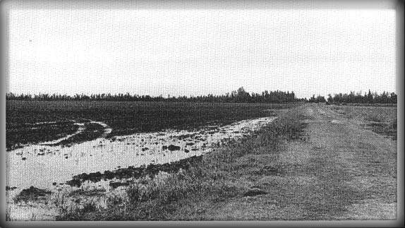

I-1 |
|
...Похоже, при рождении достались мне две вещи: злосчастье да любовь к блюзу.  В воскресенье 4 апреля 1915 года новорожденный младенец объявил о своем появлении на свет воплем, который разбудит мир. Звали его Маккинли Морганфилд, прозвище Мадди Уотерс оставалось еще в будущем. Случайно или нет, но мальчик, который, возмужав, сумеет покорить недосягаемые вершины творчества, был назван в честь высочайшей горы североамериканского континента, Маккинли. Его родной дом стоял, однако, на склоне обыкновенного пологого холма. Мир, в который он вступал, был полон противоречий: в нем уживались райская красота природы и дьявольская жестокость людей, богатая культура и ужасающая нищета, белое и черное. Маккинли был вторым сыном Олли Морганфилда и Берты Джонс. Его родители не были женаты, хотя, скорее всего, какое-то время жили как муж и жена - на юге часто пренебрегали формальностями. Когда мальчику исполнилось три года, Берта умерла, и никаких сведений о ее жизни или характере не сохранилось. Об Олли известно немного больше: родом из Бирмингема, Алабама, он арендовал в районе местечка Роллинг Форк участок земли, где выращивал хлопок и кукурузу, а чтобы дополнить скудный рацион своей семьи, держал свиней и кур. Не выбиваясь из нужды, придавленный к земле южным укладом жизни, Олли, тем не менее, держался с большим достоинством. По словам его сына Роберта, "это был лучший человек из всех, кого я знал". В нелегкой борьбе за существование отдушиной для Олли был блюз - музыка, родившаяся на этой земле и воплотившая в себя не только бесконечные страдания чернокожих земледельцев, но и их надежды, и маленькие радости. Олли никогда не был профессионалом: он играл на гитаре и губной гармонике на вечеринках у себя в округе. Музыка была его призванием, и юный Маккинли, без сомнения, впервые услышал блюз именно от отца. Известно, что Маккинли родился неподалеку от деревушки Роллинг Форк, однако точное место его рождения до сих пор не установлено. Сам он утверждал, что родился в округе Шарки на плантации Крогер. Однако места с таким названием не существовало; некая фирма "Крогер" владела Магнолиевой плантацией в 10 километрах от Роллинг Форка, но Олли поселился там уже после смерти Берты. По словам Роберта Морганфилда, сводного брата Маккинли, его брат появился на свет на плантации Коттонвуд в округе Иссакена, тоже неподалеку от Роллинг Форка. Роллинг Форк расположен в Южной Дельте Миссисипи, которая начинается в 500 километрах от устья реки, у Виксбурга, и тянется на 400 километров к северу до самого Мемфиса. Это широкая аллювиальная долина, сформировавшаяся благодаря бесчисленным разливам рек Миссисипи и Язу, совершенно плоская, но веселая и цветущая. С востока ее замыкают невысокие холмы, лежащие в самом центре штата Миссисипи. Летом здесь жарко и душно, идут проливные дожди; зимой тоже дожди, но холодные, бывают и заморозки. Плодородную илистую почву раньше покрывали густые субтропические леса с непроходимыми болотами и стоячими заводями; в чаще водились медведи и пантеры, а пруды кишели гигантскими рыбами, ядовитыми водяными змеями и личинками малярийного комара. Люди, которые отважились бросить вызов дикой природе и отвоевать у зарослей клочок пахотной земли, были настоящими героями. Первым белым, поселившимся в местах, где позже вырос Роллинг Форк, был Томас И. Чэни, который в 1826 году прибыл туда с картографической экспедицией, купил участок земли вдоль Оленьего ручья, а через два года вернулся с семьей и основал плантацию Роллинг Форк. Название навеяно журчанием Оленьего ручья, который как раз в этом месте разветвляется и с шумом несет свои воды к месту впадения в реку Санфлауэр (Подсолнух). В те времена это был вовсе не мелкий, узкий проток, как сейчас, а настоящая полноводная река, вплоть до Гражданской войны еще судоходная. Военные катера северян легко поднимались по ней до Роллинг Форка, не встречая на своем пути других препятствий, кроме поваленных местными жителями деревьев. После войны единственным господином и повелителем этих равнин стал хлопок. В жертву ему были принесены и природа, и судьбы миллионов людей: чтобы подчинить себе этот дикий край, человек уничтожил леса и окружил Миссисипи со всех сторон дамбами, а вся тяжесть труда легла на плечи бывших рабов, которых власти призвали на освоение новых земель. Мечтам чернокожих о том, что, работая, они смогут вырвать свои семьи из лап нищеты, вряд ли суждено было сбыться. После поражения Юга негритянское население было плотно отгорожено от белых при помощи всякого рода финансовых и социальных барьеров. Испольная система в хозяйстве и система расовой сегрегации (прозванная южанами, по имени героя народной песни 1820-х годов, "Джимом Кроу") держали чернокожих в положении, мало отличавшемся от рабского. "Законы Джима Кроу" закрепили это положение и с юридической стороны, чтобы заставить народ вечно плясать под дудку белых. К 1915 году, когда родился Маккинли, расизм был узаконен уже во всех без исключения штатах Юга. Местная администрация фактически не допускала чернокожих до выборов - это делалось с помощью тестов на грамотность, подушного налога и закона, по которому избирательное право распространялось лишь на потомков людей, которые пользовались им ранее - то есть на белых. Общество было строго разграничено по цвету кожи: существовали школы, больницы, рестораны, театры, поезда и даже кладбища "только для черных", так что белые могли спокойно жить, даже не замечая тех, кто их кормит. Это была система тотального подчинения и контроля. Расхожим оправданием расизма в те времена была идея о том, что чернокожих следует держать в узде. Например, публицист по имени Дэвид Кон, уроженец Дельты, утверждал, что черные "эмоционально нестабильны", что это сущие дети, которые сами не выдержат свободы, даже если кому-то и взбредет в голову им ее предоставить. По его мнению, черные уступали белым и с моральной стороны: жизнь для них якобы была "свободной от морали". И он был не одинок в своих заблуждениях. Негритянское население Юга душили жестокая нищета и связанные с ней голод и болезни. Его активность подавляло и отсутствие системы образования: неграм полагалось учиться только в начальных школах. В 1915 году, когда родился Маккинли, сенатором от штата Миссисипи был Джеймс К. Вардаман, ярый расист, вообще не считавший чернокожих людьми. Он утверждал, что образование наполнило бы их сердца несбыточными надеждами, а выучить негра значит всего лишь "загубить хорошего работника". Рука об руку с бесправием шло откровенное насилие. Во времена детства Маккинли жизнью чернокожего правил страх: за малейший проступок или даже недоказанное обвинение его отправляли на каторгу; один лишь взгляд на белую женщину мог быть расценен как попытка изнасилования - любой неверный шаг означал гибель. В этом мире нельзя было расслабиться ни на секунду: помимо закона существовал и Ку-Клукс-Клан, к которому втайне принадлежали почти все политики-южане. Публичные порки и даже суд Линча были в порядке вещей. При этом преступления белых против черных, включая убийство, практически не наказывались. У этой системы есть только одно возможное оправдание: благодаря ей появился блюз. Избери история другой путь, и черный американец, может быть, уже пользовался бы всеми благами Американской мечты, тратил честно заработанные деньги и вообще чувствовал себя в полном порядке - вместо того, чтобы сидеть в убогой хижине без всякой надежды на будущее и с единственной отдушиной в виде музыки. Так что, играя для своего крохотного сына, Олли не мог не чувствовать, что блюз - это не набор популярных песенок, а важнейшая часть всего жизненного уклада Дельты, выражающая дух ее народа. Незадолго до того, как Маккинли исполнилось три года, его мир утратил надежную основу. 5 марта 1918 года его отец женился на женщине по имени Гертруда Крэйтон, которая позже родит ему еще пятерых сыновей и пять дочерей. Возможно, он к тому времени уже не жил с Бертой и ее детьми; как бы то ни было, в том же году Берта умерла. Случилось это до или после свадьбы Оллие, никто не помнит. Ребенок остался сиротой. Все, кого он знал и любил, покинули его. Мальчика приютила мать Берты, 39-летняя Делла Джонс, которой предстоит сыграть совершенно исключительную роль в жизни Маккинли. Она увезла его к себе, на плантацию Стоволл возле Кларксдэйла, штат Миссисипи. Там же жил брат Олли, Луи Мэтьюз Морганфилд. До того, как эти места были заселены белыми и чернокожими, здесь обитали индейцы племени чокто. Правительство США оттеснило их на запад, захватив лучшие земли и леса, и к 1838 году, когда сюда прибыл 16-летний уроженец Нового Орлеана Джон Кларк, почти все чокто уже переселились в Оклахому. Предприимчивый юноша собирался торговать лесом и путешествовал в поисках подходящих участков, однако самые удобные, по берегам Миссисипи, были расхватаны сразу, как только ушли индейцы. Ему удалось отыскать место, откуда он мог бы сплавлять бревна до Нового Орлеана, только в 200 километрах к востоку, вдоль реки Санфлауэр. К 1848 году Кларк скопил 126 долларов, приобрел у правительства США сто акров земли и решил строить город. Любой на его месте использовал бы рабский труд, но Кларк предпочел привезти работников с Севера. Во время гражданской войны строительство было приостановлено, и Кларксдэйл появился на карте только в 1882 году - через 40 лет после того, как на берегах Санфлауэр впервые застучал топор. С тех пор город рос и процветал; вскоре через него прошла железная дорога, а место лесных дебрей заняли хлопковые поля. Любопытно, что честь открытия блюза для широкой публики принадлежит жителю Кларксдэйла, музыканту по имени Уильям Кристофер Хенди, который в 1903 году был приглашен дирижером в местный негритянский оркестр "Knights of Pythias". Однажды вечером, сидя в ожидании поезда на платформе в местечке Татуайлер, он услышал, как какой-то негр играет на гитаре и поет. Очарованный свежестью этой музыки, Хенди сделал несколько обработок блюзов для своего оркестра, а позже, благодаря собственным композициям, завоевал титул "отца блюза". В 1918 году, когда в Кларксдэйле впервые оказался маленький Маккинли, это был процветающий город с семью тысячами жителей. Еще одна будущая знаменитость, семилетний Томас "Теннеси" Уильямс, уже впитывал в себя впечатления, которые позже лягут в основу его блистательных пьес. Вскоре Кларксдэйл был провозглашен "Золотой пряжкой Хлопкового пояса" и "маленьким Нью-Йорком", а в начале 20-х его прозвали "Чудесным городом". "Уолл-стрит Джорнал" отмечал, что это город "абсолютно современный" и "в цветущем блеске юности", а один журналист писал, что не знает в Америке другого города, где "богатство архитектуры существовало бы в окружении столь же дивной природы". Кларксдэйл считался богатейшим сельскохозяйственным центром США и мог похвастаться наибольшим числом миллионеров на душу населения - разумеется, среди белых. В том же 1918 году 200 чернокожих жителей Кларксдэйла отправились на II Мировую войну. Рискуя жизнью за свою страну, они надеялись, что с ними, по крайней мере, будут обращаться по-человечески - и напрасно. Юг цепко держался за старые обычаи: эксплуатация негритянского населения и бытовой расизм оставались в порядке вещей. Дом Мисс Деллы стоял в 8 километрах от города на плантации Стоволл, которая занимала 5 тысяч акров плодороднейшей земли к юго-востоку от Старой реки - бывшей излучины Миссисипи, отрезанной от основного русла. Хлопковые и маисовые поля, ярко-зеленые пастбища, сосновые и дубовые рощицы составляли удивительный по красоте пейзаж. Курганы, оставшиеся от племен, которые жили на этих равнинах еще до чокто, служили надежным убежищем в случае наводнения. Чокто успели расчистить под свои поселения значительную часть зарослей, а следы устроенной ими скаковой дорожки видны и по сей день. В 1830 году чокто подписали Договор Ручья Пляшущего Кролика, по которому вся их территория к востоку от Миссисипи переходила в собственность правительства США. Вскоре после этого здешние земли приобрел лесоторговец из Мемфиса по имени Джон Одам. С тех пор собственность передавалась по женской линии: дочь Одама вышла замуж за некоего Джона Фаулера, а их дочь - за адвоката Уильяма Говарда Стоволла, который служил во время Гражданской войны адъютантом при генерале Борегарде, а когда послевоенная неразбериха немного улеглась, занялся сельским хозяйством. Его старший сын Джон жил в Стоволле и управлял соседней плантацией "Прерия". Младший, тоже Уильям Говард, во время Первой мировой был летчиком-истребителем, а, вернувшись, принял управление Стоволлом. Плантация Стовалла оказалась на "перекрестке", где складывался блюз. В 1901 году приехавший на раскопки археолог Чарльз Пибоди услышал от старого негра из Стоволла новые, незнакомые песни и написал в "Вестник американского фольклора" первую в мире статью о блюзе. В годы, когда на плантации жил Маккинли, здесь обитало около 90 семей издольщиков, к которым принадлежала и его бабушка. Жертвы южной аграрной системы, они и после отмены рабства были накрепко привязаны к земле. Каждая семья арендовала у плантатора домик и участок земли от 15 до 40 акров, который обрабатывала весь год за небольшую плату (от 15 до 50 долларов в месяц) и долю урожая. В теории такая система выглядела неплохо, однако на деле негритянские семьи не выбивались из нужды. Издольщик попадал в кабалу с самого начала: не имея возможности взять кредит в банке, деньги на все необходимое в хозяйстве он занимал у плантатора, а чтобы прокормиться до следующего урожая, покупал продукты в плантационной лавке по ценам, установленным хозяином. Большинство издольщиков оставались в долгах на всю жизнь. Известно, что многие плантаторы подделывали записи в приходно-расходных книгах, а пытаться проверить их значило навлечь на себя серьезную опасность. Плату арендатор получал, как правило, не деньгами, а квитанциями, которые действовали только в местной лавке, обеспечивая ей стопроцентную монополию. Лишенные всех прав, практически не имея на руках реальных денег, чернокожие вели полуголодное существование. Хотя у нас нет сведений о том, что кто-то из Стоволлов обманывал своих арендаторов, их семья все же поддерживала несправедливый порядок, обрекавший негритянских работников на вечную нищету. Существует расхожее, ставшее уже частью блюзового фольклора, представление о доме Деллы как о жалкой однокомнатной хибарке. На самом деле остов, который мы видим сейчас - лишь древнейшая часть дома, разрушенного в 1983 году ураганом, грубая, но прочная хижина, выстроенная каким-то поселенцем еще до Гражданской войны; позже к ней были пристроены еще три комнаты. Двери двух передних комнат выходили на открытую террасу. Скорее всего, жилище Мисс Деллы ничуть не выделялось из ряда обшарпанных домиков, стоявших вдоль единственной улицы Стоволла. Из мебели в доме имелось лишь самое необходимое. Разумеется, о водопроводе и канализации в те времена не было и речи, и даже лохань для мытья обычно стояла на улице. Освещались масляной плошкой с куском бечевки вместо фитиля. Зимой, когда в щели задувал пронизывающий ветер и капало с потолка, единственным источником тепла служила дровяная печка. Стены обычно оклеивали газетной бумагой, а для украшения вешали журнальные картинки. Пол покрывали коврики, сплетенные из лоскутов старой одежды и чулок, а спали рабочие на матрасах, набитых кукурузной шелухой. И одежда, и обувь были самодельные. Список продуктов ограничивался соленой свининой, фасолью, бобами, овощами, кукурузными лепешками и патокой. Мисс Делла была сильной женщиной. Она не могла иначе: единственной возможностью прокормить семью было возделывать арендованный участок в 40 акров, а это значило работать наравне с самыми крепкими мужчинами, пахать, мотыжить, собирать хлопок. Заработать на жизнь другим способом она не могла, так как нигде не училась. Вместе с Деллой жил ее сын Джо Брант, который был всего на три года старше Маккинли, и, не успев вырасти, мальчики тоже впряглись в ярмо непосильного труда, который, однако, доставлял им лишь самое скудное пропитание. Тяжелая жизнь не ожесточила сердце Мисс Деллы. Ее любовь к внуку была безгранична. Мальчика часто тянуло повозиться в грязи, и бабушка звала его "маленьким грязнулей" - "my little muddy baby". Прозвище "Мадди" так и осталось с ним на всю жизнь. Мисс Делла считала своим долгом дать внуку воспитание, которое служило бы ему опорой в течение всей жизни. Сторонница жесткой дисциплины, она с детства прививала мальчику веру в Бога и понятие о нравственности. Бабушка очень рано стала поручать ему мелкую домашнюю работу - при их трудной жизни это было необходимо - а вместе с тем внушать чувство ответственности и собственного достоинства. Однако было время и для развлечений. Мадди вспоминает, что начал музицировать еще года в три: колотил по перевернутой лохани, жестянке или ведру - всему, что попадалось под руку - и пел. "Я брал палку и стучал ей по земле - искал новые звуки - и напевал свою собственную песенку", - вспоминает он. И неудивительно: воздух плантации был весь напоен музыкой. От края до края разливались тягучие зачины и ответы полевых песен: "Боже, я устал / Боже, как я здесь устал". Пронзительные крики чередовались с глубокими, горестными вздохами. Песня помогала работникам двигаться в едином ритме и облегчала душу. Время от времени ветер доносил слабый гудок паровоза, и тогда, приободрившись, они пели о скором освобождении и новой жизни. Музыка со всех сторон окружала этих людей и во время отдыха: безгласный народ не имел другой возможности выразить свои чувства. Горе и разочарование, радость и непоколебимая вера в Бога - все это выплескивалось в песне. В субботу вечером музыка собирала их на буйное празднество, а воскресным утром воодушевляла перед молитвой. Баптистская церковь служила центром всей общественной жизни чернокожих Юга: фактически они могли собираться только там. В религии эти люди обретали чувство собственного достоинства, в котором им отказывали белые. В этих краях церковь имела такое влияние, что те или иные религиозные мероприятия: молитвенные собрания, чтение Библии, спевки хора - устраивались буквально каждый день, а по воскресеньям различные службы и собрания продолжались до самого вечера. Мадди говорил, что подростком он не пропустил ни одной воскресной службы. Жители Стоволла посещали местную баптистскую церковь "Оук Ридж"; ее прихожанином был и дядя Мадди Луи Мэтьюз Морганфилд, в 1929 году ставший проповедником, а в 1936 - пастором. Его сыновья Элв и Вилли, однако, утверждают, что их двоюродный брат в храме почти не бывал - скорее всего, когда они подросли и начали замечать его отсутствие, Мадди, который был старше них примерно лет на десять, уже охладел к религии. Элв вспоминает, что Мадди регулярно ходил в церковь ребенком, а потом забросил ее из-за увлечения блюзом. Должно быть, Мисс Делла следила за тем, чтобы мальчик усвоил хотя бы самые начатки религии. Возможно, Мадди был и не самым ревностным прихожанином, однако посещение церкви, без сомнения, во многом определило его будущее: он не только впитал в себя веру в Бога, которая послужит ему опорой в течение всей жизни, но и прошел лучшую школу пения, о которой мог мечтать будущий блюзмен. Позже он говорил, что для того, чтобы петь глубоко и проникновенно, нужно "что-то особенное в душе, что может дать только церковь". Пение в хоре развило голос Мадди, так что он стал "гудеть и дрожать по-настоящему", обогащая его любимые блюзы новыми оттенками. Большое влияние на чернокожих Дельты имели и остатки религии вуду (по-местному, худу), привезенной ими из Африки. Эти верования использовали местные колдуны, прорицатели и знахари. Широко распространен был талисман "моджо" - мешочек, куда вкладывался особый корень (John the Conquer root, lucky hand root) или кость черной кошки; такая вещь давала бесправному человеку ощущение пусть небольшой, но власти. Сам Мадди не был суеверен, но относился к худу с уважением, так как знал массу случаев, которые не мог объяснить иначе, чем магией. Позже образы, связанные с худу, послужат ему материалом для самых ярких и запоминающихся песен. |
 |